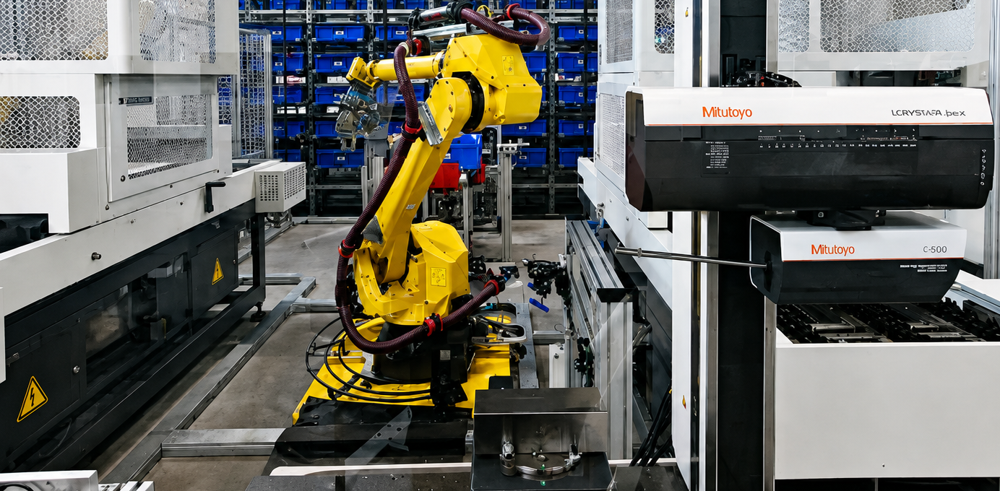

Integrated a Mitutoyo CMM thread measuring machine into an automated manufacturing cell to achieve real-time quality control, automated reporting, and closed-loop process optimization in a high-precision production environment.
Designed and programmed the Siemens PLC state machine to handle TCP/IP network communication with the CMM device, routing inspection data through an OPC server to automatically calculate and apply offset parameter corrections on a CMZ CNC lathe.
Developed an automated report generation system using RStudio to extract raw measurement logs, process statistical quality metrics, and compile inspection reports automatically upon cycle completion without manual intervention.
Implemented dynamic SCADA monitoring logic to provide real-time shop floor visibility, configuring visual indicators that automatically transition from green to red upon detecting non-conforming (NG) parts at the measurement stand.
Commissioned and optimized the complete integration by establishing reliable handshake sequences between the PLC, CMM, SCADA system, and CNC machinery, ensuring seamless fault recovery and uninterrupted cell operation.